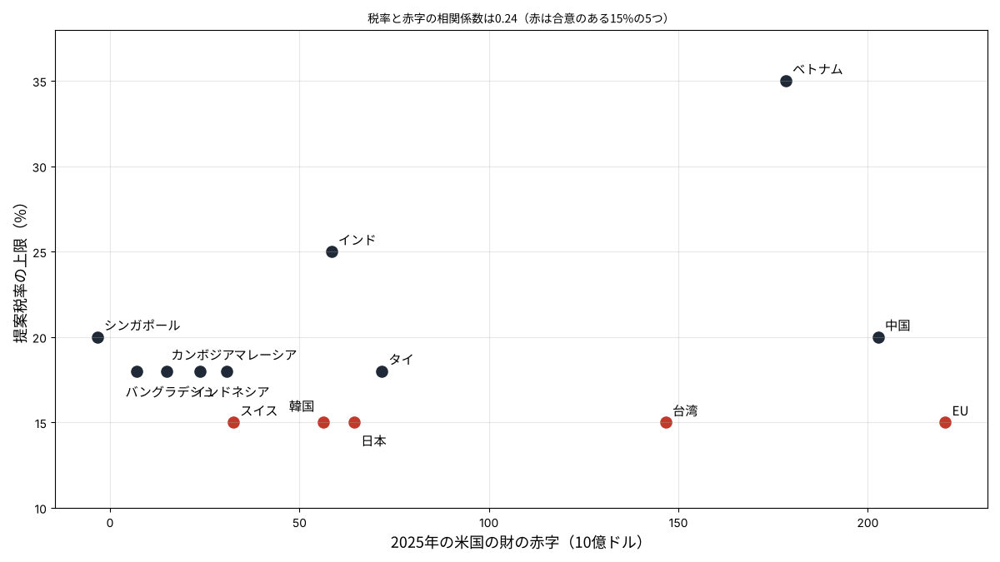
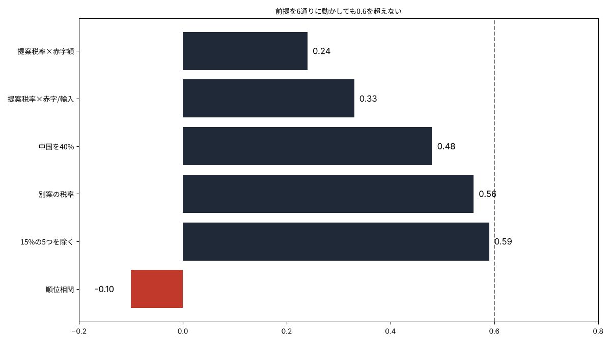

米国の新関税案で日本は最大15%、ベトナムは35%。14か国・地域の税率は対米赤字の大きさで決まっているのか――USTR案と米国勢調査局の2025年統計で検証
米国の通商代表部（USTR）は11月25日、日本・中国・EUなど14か国・地域に対する新しい関税案を公表した。日本は最大15%、ベトナムは最大35%、中国は最大20%とされる。
理由として挙げられたのは、相手国の「構造的な過剰生産能力」である。そうであれば、米国の赤字が大きい相手ほど税率が高くなっているはずだ。
本稿の問いは、提案された税率は、各国・地域に対する米国の貿易赤字の大きさとどこまで対応しているのか、である。
- 14か国・地域の提案税率と2025年の対米赤字の相関係数は0.24にとどまり、赤字の大きさでは税率をほとんど説明できない。
- 税率15%の5か国・地域（EU・日本・韓国・スイス・台湾）の赤字は325億ドルから2,204億ドルまで約6.8倍の幅があり、米国が黒字のシンガポールには20%が提案された。
- 税率を分けているのは赤字の大きさより、すでに合意や枠組みがあるかどうかに見える。日本の15%は、昨年の合意の水準と同じである。
問いと背景
まず言葉をそろえる。通商法301条は、相手国の不公正な慣行に対して、米国の大統領に制裁の権限を与える条文である。今回の案は、301条(b)に基づく判断として示された。
貿易赤字（財）とは、ある国からの財の輸入額が、その国への輸出額を上回った分を指す。本稿では、サービスを含まない財の取引だけを扱う。
今回の案が「過剰生産能力」を理由にしている以上、米国への輸出が輸入を大きく上回る相手、つまり米国の赤字が大きい相手ほど、税率が高くなるのが自然である。
一方で、米国は2025年に多くの国と関税の合意や枠組みを結んできた。USTRも、今回の案はそうした合意を考えに入れていると説明している。税率が赤字で決まるのか、合意で決まるのかは、数字を並べれば確かめられる。
データと方法
税率は、USTRが11月25日に公表した案の上限の値を使った。法律事務所ベーカー・マッケンジーが案の本文から整理した一覧と照らし合わせている。中国は上限20%、別案として40%も示されている。
赤字は、米国勢調査局が公表している2025年通年の国別の財の貿易の数字を使った。輸出・輸入・差し引きを国ごとに拾い、10億ドル単位にそろえた。
比べ方は2つある。1つは赤字の金額そのもの、もう1つは赤字を輸入額で割った比率である。比率で見れば、国の大きさの違いをいくらか消せる。
税率と赤字の関係は、相関係数で示す。相関係数は−1から1の値をとり、1に近いほど「赤字が大きいほど税率が高い」関係が強いことを意味する。0に近ければ、関係はほとんどない。
結果
| 国・地域 | 提案税率（上限） | 別案 | 2025年の対米赤字 | 赤字÷輸入 |
|---|---|---|---|---|
| EU | 15% | 20% | 2,204億ドル | 35% |
| 中国 | 20% | 40% | 2,027億ドル | 66% |
| ベトナム | 35% | ― | 1,783億ドル | 92% |
| 台湾 | 15% | 25% | 1,466億ドル | 73% |
| タイ | 18% | 25% | 717億ドル | 79% |
| 日本 | 15% | 20% | 644億ドル | 44% |
| インド | 25% | ― | 584億ドル | 56% |
| 韓国 | 15% | 25% | 564億ドル | 45% |
| スイス | 15% | 20% | 325億ドル | 31% |
| マレーシア | 18% | 25% | 308億ドル | 52% |
| インドネシア | 18% | 25% | 238億ドル | 69% |
| カンボジア | 18% | 25% | 149億ドル | 97% |
| バングラデシュ | 18% | 20% | 71億ドル | 75% |
| シンガポール | 20% | ― | 34億ドルの黒字 | ― |
14か国・地域に対する米国の財の赤字は、合わせて1兆1,046億ドルになる。2025年の米国の財の赤字は1兆2,409億ドル（国際収支ベース）で、数え方が違うため単純には比べられないが、その大部分を占める。
ところが、提案された税率と赤字の金額の相関係数は0.24にとどまった。赤字を輸入額で割った比率で見ても0.33である。赤字の大きさで税率を説明できる部分は、ごくわずかだといえる。

いちばん分かりやすいのは、税率15%の5か国・地域である。EUの赤字は2,204億ドル、スイスは325億ドルで、差は約6.8倍ある。それでも税率は同じ15%だ。この5つは、いずれも米国と関税の合意や枠組みを結んだ相手である。
逆の例もある。シンガポールは、米国が34億ドルの黒字を出している相手で、14の中で唯一の黒字国である。それでも税率は20%で、赤字が1,466億ドルある台湾の15%より高い。
税率が最も高いのはベトナムの35%で、赤字は1,783億ドル、輸入に対する赤字の比率は92%と極めて高い。この1か国は、赤字の大きさと税率が素直に対応している。ただし、ベトナムとインドとシンガポールには、合意がまとまれば税率を下げる道が案に書かれている。
また、2025年に赤字が過去最大の1,969億ドルとなったメキシコは、今回の14に入っていない。赤字の大きさが選定の基準なら、最初に名前が挙がってもおかしくない相手である。
感度分析
結果が前提の置き方で変わらないかを、6通りに動かして確かめた。

別案の税率（日本20%・韓国25%など）に置き換えると、相関係数は0.56まで上がる。別案は、合意のある国にも高めの税率を示しているため、赤字との関係が少し見えやすくなる。中国を別案の40%にすると0.48である。
一方、合意のある15%の5か国・地域を除いて残りの9つで見ると、金額では0.59だが、比率では0.20に下がる。順位の相関（スピアマン）で見ると−0.10で、むしろ関係は消える。
どの前提でも、相関係数が0.6を超えることはなかった。「赤字が大きいほど税率が高い」という読みは、前提を動かしても強くはならない。
考察
反対の見方もある。USTRが理由に挙げたのは赤字ではなく「過剰生産能力」であり、赤字と税率が対応しないのは当然だ、という見方である。生産能力の指標を国ごとに比べれば、別の対応が見えるのかもしれない。
データにも限界がある。赤字は2025年の1年分で、今年の動きは入っていない。また、案は上限の税率であり、実際にかかる税率は、すでにある関税を差し引いた形で決まる。最終的な税率は、2027年1月25日の公聴会の後に決まる見込みである。
答え合わせの基準は2つある。1つは、最終案で合意のない国の税率だけが上がるかどうか。もう1つは、米中の休戦が切れる2027年1月10日の後に、中国の税率が20%から40%へ動くかどうかである。どちらかが起きれば、税率は合意の有無で決まるという読みが強まる。
結論
14か国・地域の提案税率は、対米赤字の大きさとはほとんど対応していなかった。相関係数は0.24で、前提を6通りに動かしても0.6を超えない。
税率を分けているのは、赤字の金額より、米国との合意や枠組みがあるかどうかである可能性が高い。合意のある5か国・地域はそろって15%で、合意を求められている国には、下げる道が案に書かれている。
僕はこう見ている
僕は、関税の見出しで口座の配分を変えない。日本の15%は昨年の合意の水準と同じで、驚く数字ではなかった。僕の実業（店・不動産・シェアオフィス）は輸出入をしていないので、関税の影響はほとんど受けない。
外国株はドルのまま持っている。関税の数字を見たら、まず前回の合意の上限と比べる。上限の内側なら、配分を動かす理由にはならないと考えている。
参考文献
- 米国通商代表部（USTR）「Section 301 proposed actions on structural excess capacity（14 economies）」2026年11月25日 https://ustr.gov/about-us/policy-offices/press-office/press-releases
- 米国勢調査局「Trade in Goods with Japan（2025）」2026年 https://www.census.gov/foreign-trade/balance/c5880.html
- 米国勢調査局「Trade in Goods with China（2025）」2026年 https://www.census.gov/foreign-trade/balance/c5700.html
- 米国勢調査局「Trade in Goods with European Union（2025）」2026年 https://www.census.gov/foreign-trade/balance/c0003.html
- 米国勢調査局「Trade in Goods with Vietnam・Taiwan・Thailand・Korea・Switzerland・India・Malaysia・Indonesia・Singapore・Cambodia・Bangladesh（2025）」2026年 https://www.census.gov/foreign-trade/balance/index.html
- 米国経済分析局（BEA）・米国勢調査局「U.S. International Trade in Goods and Services, December and Annual 2025」2026年2月19日 https://www.bea.gov/news/2026/us-international-trade-goods-and-services-december-and-annual-2025
- 米国経済分析局（BEA）「Annual 2025 highlights（trad1225annual-hist）」2026年2月 https://www.bea.gov/sites/default/files/2026-02/trad1225annual-hist.pdf
- Baker McKenzie「US USTR proposes Section 301 tariffs on 14 economies over structural excess capacity」2026年11月25日 https://globalimportblog.bakermckenzie.com/2026/11/25/us-ustr-proposes-section-301-tariffs-on-14-economies-over-structural-excess-capacity/
- ABEMA TIMES「米、日本など14カ国・地域に新関税案」2026年11月26日 https://times.abema.tv/articles/-/10292285
図はYUKI CAPITALが作成。トップ画像はUnsplash。本記事は筆者自身の記録であり、投資助言ではない。
日々の数字と判断は、Xで記録している。